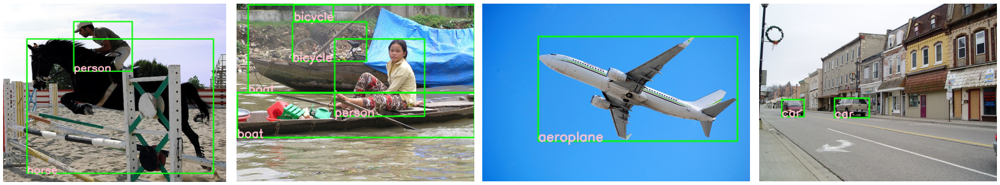

mindspore.dataset.utils.imshow_det_bbox
- mindspore.dataset.utils.imshow_det_bbox(image, bboxes, labels, segm=None, class_names=None, score_threshold=0, bbox_color=(0, 255, 0), text_color=(203, 192, 255), mask_color=(128, 0, 128), thickness=2, font_size=0.8, show=True, win_name='win', wait_time=2000, out_file=None)[source]
Draw an image with given bboxes and class labels (with scores).
- Parameters
image (numpy.ndarray) – The image to be displayed, shaped \((C, H, W)\) or \((H, W, C)\), formatted RGB.
bboxes (numpy.ndarray) – Bounding boxes (with scores), shaped \((N, 4)\) or \((N, 5)\), data should be ordered with (N, x, y, w, h).
labels (numpy.ndarray) – Labels of bboxes, shaped \((N, 1)\).
segm (numpy.ndarray) – The segmentation masks of image in M classes, shaped \((M, H, W)\). Default:
None.class_names (list[str], tuple[str], dict) – Names of each class to map label to class name. Default:
None, only display label.score_threshold (float) – Minimum score of bboxes to be shown. Default:
0.bbox_color (tuple(int)) – Color of bbox lines. The tuple of color should be in BGR order. Default:
(0, 255 ,0), means ‘green’.text_color (tuple(int)) – Color of texts. The tuple of color should be in BGR order. Default:
(203, 192, 255), means ‘pink’.mask_color (tuple(int)) – Color of mask. The tuple of color should be in BGR order. Default:
(128, 0, 128), means ‘purple’.thickness (int) – Thickness of lines. Default:
2.show (bool) – Whether to show the image. Default:
True.win_name (str) – The window name. Default:
"win".wait_time (int) – Value of waitKey param. Default:
2000, means display interval is 2000ms.out_file (str, optional) – The filename to write the imagee. Default:
None. File extension name is required to indicate the image compression type, e.g. ‘jpg’, ‘png’.
- Returns
ndarray, The image with bboxes drawn on it.
- Raises
ImportError – If opencv-python is not installed.
AssertionError – If image is not in (H, W, C) or (C, H, W) format.
AssertionError – If bboxes is not in (N, 4) or (N, 5) format.
AssertionError – If labels is not in (N, 1) format.
AssertionError – If segm is not in (M, H, W) format.
AssertionError – If class_names is not of type list, tuple or dict.
AssertionError – If bbox_color is not a tuple in format of (B, G, R).
AssertionError – If text_color is not a tuple in format of (B, G, R).
AssertionError – If mask_color is not a tuple in format of (B, G, R).
Examples
>>> import numpy as np >>> import mindspore.dataset as ds >>> from mindspore.dataset.utils import imshow_det_bbox >>> >>> # Read Detection dataset, such as VOC2012. >>> voc_dataset_dir = "/path/to/voc_dataset_directory" >>> dataset = ds.VOCDataset(voc_dataset_dir, task="Detection", shuffle=False, decode=True, num_samples=5) >>> dataset_iter = dataset.create_dict_iterator(output_numpy=True, num_epochs=1) >>> >>> # draw dataset >>> for index, data in enumerate(dataset_iter): ... image = data["image"] ... bbox = data["bbox"] ... label = data["label"] ... # draw image with bboxes ... imshow_det_bbox(image, bbox, label, ... class_names=['aeroplane', 'bicycle', 'bird', 'boat', 'bottle', 'bus', 'car', 'cat', ... 'chair', 'cow', 'diningtable', 'dog', 'horse', 'motorbike', 'person', ... 'pottedplant', 'sheep', 'sofa', 'train', 'tvmonitor'], ... win_name="my_window", ... wait_time=5000, ... show=True, ... out_file="voc_dataset_{}.jpg".format(str(index)))
Examples using imshow_det_bbox on VOC2012:
